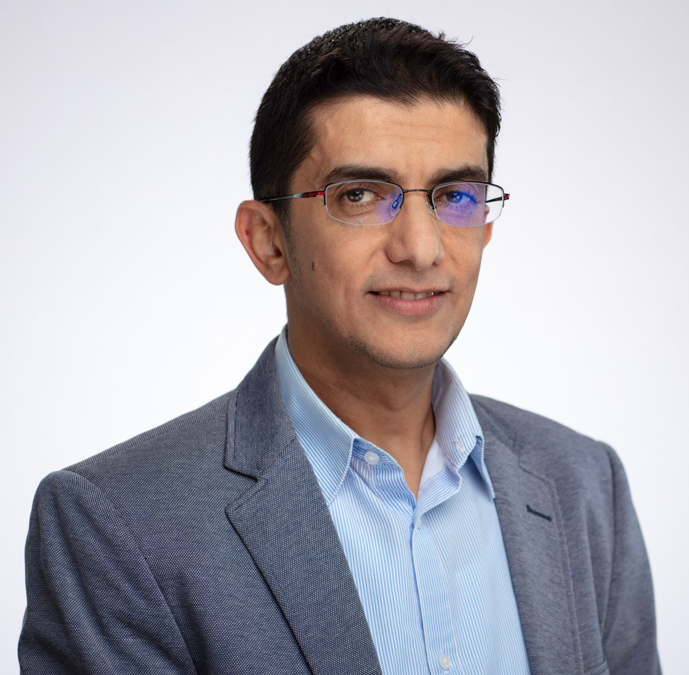

Associate Professor of AI and Media Analytics
Communication Program, Northwestern University in Qatar
Over twenty years of experience at the intersection of artificial intelligence, language, and society in the Middle East and North Africa. Research focuses on large language models, generative AI, and digital platforms, with emphasis on Arabic language resources, dialectal NLP, social media analytics, and computational social sciences.
Director of the MARSAD Lab, previously known as the Data for Social Good (D4SG) Research Group. Editorial board member at Nature Humanities and Social Sciences Communications, Cambridge Natural Language Engineering, ACM TALLIP, and Frontiers in Artificial Intelligence.
